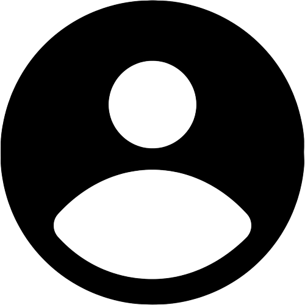

La nanotecnología es el estudio y la manipulación de materia en
tamaños increíblemente pequeños, generalmente entre uno y 100
nanómetros. Para ponerlo en perspectiva, una hoja de papel tiene unos
100.000 nanómetros de grosor. La nanotecnología comprende una muy
amplia gama de materiales, procesos de fabricación y tecnologías que
se usan para crear y mejorar muchos productos que la gente usa
diariamente.
La nanotecnología forma parte de la siguiente generación de innovación
en la ciencia y la ingeniería que transformará a muchos sectores, como
el aeroespacial, la energía, las tecnologías de la información, la
medicina, la defensa nacional y el transporte. La nanotecnología
permitirá el desarrollo de la siguiente generación de materiales que
son más fuertes, livianos y duraderos que los materiales usados
actualmente en edificios, puentes, aviones, automóviles y otras
aplicaciones.
El cuidado de la salud se acerca a una revolución gracias a la
nanotecnología. Gracias a la nanotecnología se están desarrollando,
entre otros, herramientas muy sofisticadas para detectar y tratar el
cáncer, vendajes que evitan infecciones, mejoras en la tecnología para
la generación de imágenes y mucho más.
La nanotecnología es la ingeniería de sistemas funcionales a escala molecular. Esto cubre tanto el actual trabajo como conceptos que son más avanzados. En su sentido original, la nanotecnología se refiere a la habilidad proyectada para construir elementos desde lo más pequeño a lo más grande, usando técnicas y herramientas, que actualmente están siendo desarrolladas, para construir productos completos de alto desempeño.
La nanotecnología tiene hoy en día infinidad de aplicaciones en muy
diversas áreas, entre las que destacan medicina, materiales y
electrónica. El campo más avanzado y el que tiene el mayor impacto es
el diseño de nuevos materiales con propiedades nuevas o mejoradas. Por
ejemplo, han fabricado raquetas de tenis y pértigas de atletismo más
flexibles y resistentes, así como una bicicleta muy fuerte y rígida
con un marco que pesa menos de un kilo mediante la incorporación de
nanotubos de carbono, una forma alotrópica del carbono (como el
diamante o grafito) con estructura tubular, y un diámetro muy pequeño,
del orden de los nanómetros.
También han diseñado palos de golf y cañas de pescar más resistentes y
duraderas con nanopartículas de sílice, recubrimientos de resina que
incorporan nanotubos de carbono para mejorar la resistencia al
desgaste de los kayaks y nanorecubrimientos de las embarcaciones de
vela imitando la estructura nanométrica de la piel del tiburón.
Además, han desarrollado una pintura innovadora que incorpora
nanohilos de un nanómetro de diámetro de un pigmento orgánico llamado
DXP, y ésta se ha utilizado en algunos modelos de Fórmula 1 para
mejorar la capacidad de discos duros. Asimismo, utilizaron técnicas de
nanotecnología para diseñar la pista azul de atletismo de los Juegos
Olímpicos de Río 2016, reforzándola con nanopartículas que mejoran
tanto su antideslizamiento como su duración.